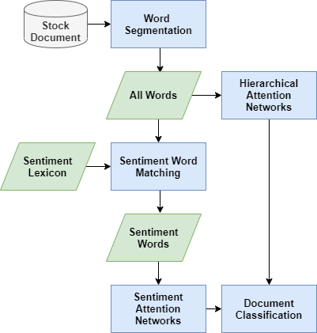

論文
金融文本情感辨識研究（2020）
結合情感詞與階層式關注網路研究金融文章情感。
- 我的角色
- 本人完成研究工作，從文獻、問題定義、資料蒐集與標註流程，到模型建構及實驗；共同作者與第三方方法保留歸屬。

共同研究原圖：情感詞與階層式注意力模型。（點圖放大）要解決的問題
金融文章情感判讀需考慮詞彙及文章層次脈絡。
輸入、處理與產出
- 輸入
- 金融文章、情感詞與多人標記後的情緒目標。
- 處理方式
- 結合全文階層式關注表示與情感詞表示，以驗證集選模及測試集比較。
- 產出
- 情感分類研究、學生研究計畫延續與TCSE論文。
適用範圍
本人完成研究工作，標記者、共同作者與第三方HAN及情感詞典保留歸屬；不外推投資績效。
核心問題與我的做法
從第一次研究，把模糊的情緒變成可學習的任務
金融新聞的正負面，還不足以描述讀者的激動程度；第一次做研究，也必須先把問題與標記方式定義清楚。
我完成文獻、資料與模型研究，將正負傾向及激動程度拆成兩個維度。標記流程由五位投資者獨立標記、去除極值後平均並處理分歧，保留標記者與共同作者的貢獻。
從學生研究計畫走到可訓練的分類任務與 TCSE 正式發表，累積問題定義、資料標記、模型及實驗的完整研究經驗。
模型反覆調整沒有改善，回頭檢查資料與比較方式
初期反覆改模型仍難改善效果；只有換架構，無法辨別是資料、參數或表示方式的限制。
我補充資料並比較參數與模型變體，結合 HAN 全文表示與 SAN 情感詞表示，以驗證集選模、測試集比較。這時探索較粗糙，後續研究再逐步完善消融與參數策略。
留下模型、資料與對照實驗的研究結果，也形成後續研究的改進方向；成果限情感分類，不等於投資績效。
成果與驗證
將學生研究計畫延伸為 TCSE 2020 正式論文發表。
情感詞典 · Hierarchical Attention Network